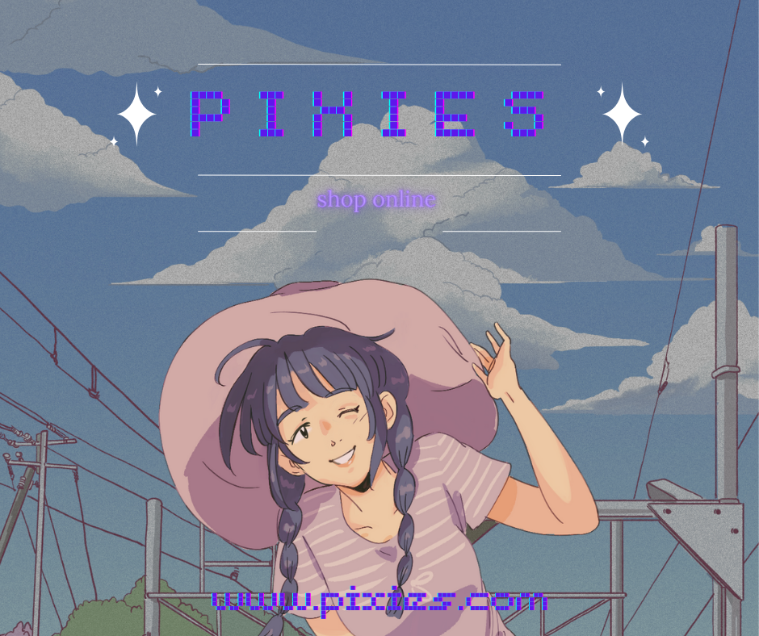
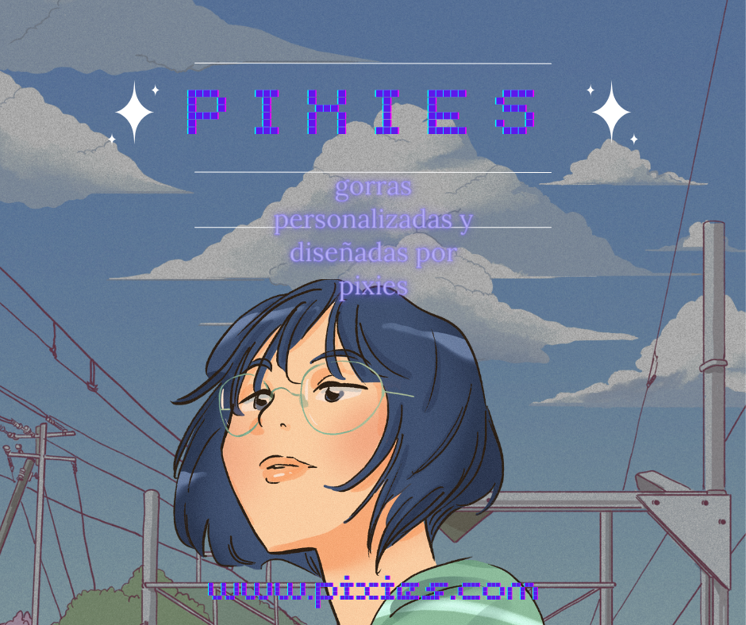
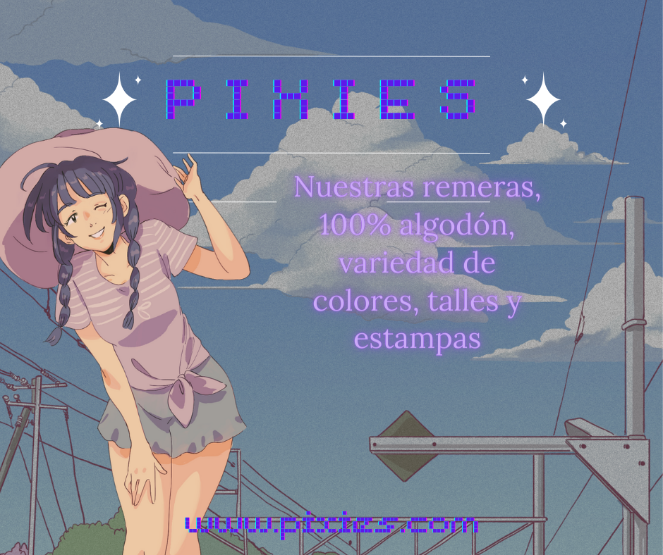
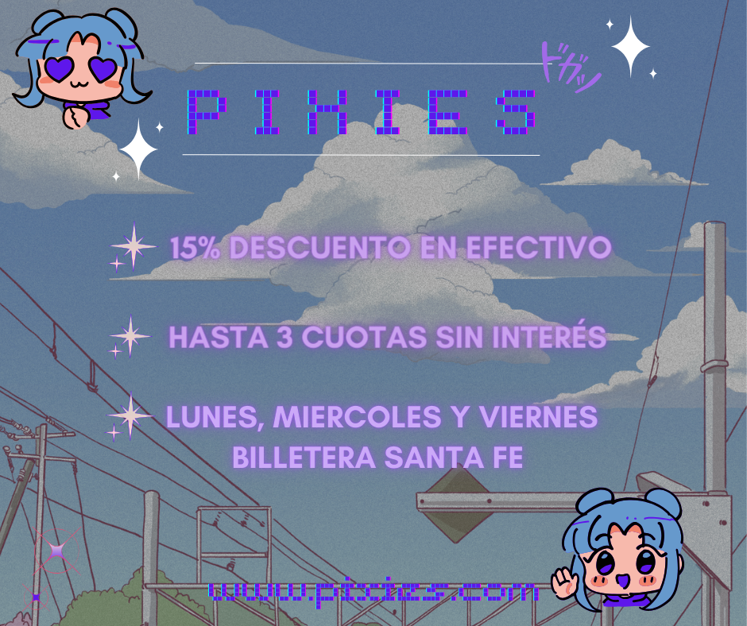

\




NUESTRA HISTORIA
Esta historia de cultivo sostenible y amor por la madre naturaleza comenzó hace varias décadas, cuando un grupo de visionarios decidió que había una manera más armoniosa de cultivar y alimentar al mundo. En lugar de explotar la tierra y agotar sus recursos, esta cooperativa de soñadores optó por abrazar prácticas agrícolas respetuosas con el medio ambiente. Descubrieron los secretos del cultivo orgánico, donde la tierra es tratada como un tesoro, y en cada surco se siembra la semilla de un futuro más prometedor. La huerta orgánica se convirtió en un refugio de biodiversidad, donde las mariposas revolotean, las abejas zumban y las aves anidan entre los cultivos. La armonía entre las diferentes especies y la tierra fértil nutren el ecosistema en su totalidad, brindando un espectáculo de vida en cada rincón. Con un enfoque en la sostenibilidad y la responsabilidad con el planeta, esta cooperativa adoptó prácticas de conservación del agua y el suelo. Implementaron sistemas de riego eficientes y diseñaron métodos para reutilizar recursos naturales, reduciendo así su huella ambiental. El compromiso de la cooperativa con la autogestión es un pilar fundamental en su historia. Aquí, cada miembro es una pieza esencial del rompecabezas. Las decisiones se toman colectivamente, y el conocimiento y las habilidades de cada persona son valorados y compartidos. Juntos, trabajan con pasión y dedicación para hacer florecer la tierra y cosechar los frutos de su esfuerzo. Cada mañana, los agricultores se despiertan con gratitud en el corazón y una visión clara: llevar al mundo alimentos frescos y nutritivos. Desde las jugosas hortalizas hasta las dulces frutas, cada producto de la huerta orgánica es un regalo de la tierra y el trabajo humano. Los lazos con la comunidad son fuertes, ya que la cooperativa se enorgullece de compartir su conocimiento y sus productos con aquellos que buscan una conexión más profunda con la naturaleza y una alimentación consciente. Talleres educativos, visitas escolares y mercados locales son solo algunos de los medios para tejer estos lazos con la sociedad. La historia de esta huerta orgánica es una inspiración para todos los que buscan un futuro más sostenible y respetuoso con la Tierra. Un recordatorio de que cuando trabajamos juntos en armonía con la naturaleza, podemos cosechar no solo alimentos frescos y deliciosos, sino también una comunidad fuerte y un planeta más saludable para las generaciones venideras.
ACERCA DE NOSOTROS
En lo profundo de un rincón especial, donde la solidaridad y la equidad florecen, se encuentra una cooperativa única en su esencia. Hace diez años, un grupo de personas con una visión compartida se unió para crear un modelo de negocio basado en la igualdad y el respeto mutuo. En el corazón de esta cooperativa se encuentra su directora, una líder apasionada y comprometida con los valores que definen su identidad. En esta cooperativa, todos los miembros tienen una voz y un voto en la toma de decisiones. Cada empleado es valorado por sus habilidades y conocimientos únicos, y juntos, como una comunidad unida, forjan el camino hacia un futuro más prometedor. Aquí, no hay jerarquías rígidas ni barreras entre la dirección y el equipo, solo un espíritu colaborativo que fomenta el crecimiento individual y colectivo. La directora de la cooperativa es una inspiración para todos, ya que personifica los principios de liderazgo compartido y el empoderamiento de los demás. Su visión audaz y su enfoque inclusivo han allanado el camino para un entorno de trabajo donde cada idea es bienvenida y cada perspectiva es considerada.
NUESTROS PRODUCTOS
Descubre nuestra selección de productos orgánicos, cultivados en el idílico pueblo de Rufino, en Santa Fe.\ En armonía con la naturaleza y libre de explotación de la tierra, nuestro compromiso es ofrecerte alimentos de la más alta calidad. Cada cosecha se cultiva con el respeto y cuidado que merece nuestro entorno, sin agroquímicos dañinos. Del campo directo a tu mesa, disfruta de sabores auténticos y nutritivos que reflejan nuestro compromiso con un estilo de vida sostenible.
UNETE!
Únete a nuestro apasionante proyecto y sé parte del cambio. Buscamos personas proactivas y comprometidas con la creación de un mundo mejor, que valoren el cuidado del medio ambiente y la sostenibilidad. Si eres un apasionado defensor del cambio ambiental, te invitamos a sumarte a nuestra comunidad. Llena el formulario que encontrarás a continuación y forma parte de un equipo dedicado a hacer del planeta un lugar más saludable y sostenible para todos. Tu participación es fundamental para construir un futuro más brillante.